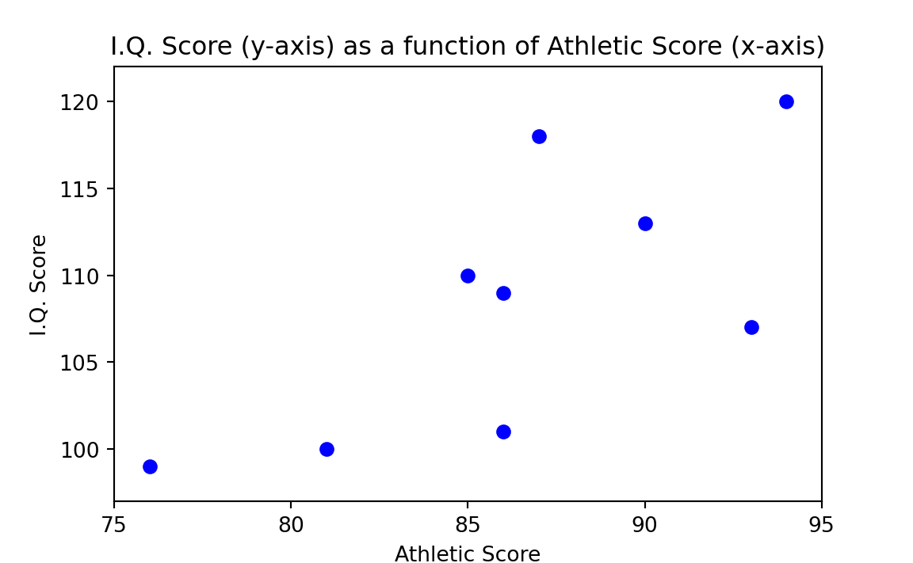
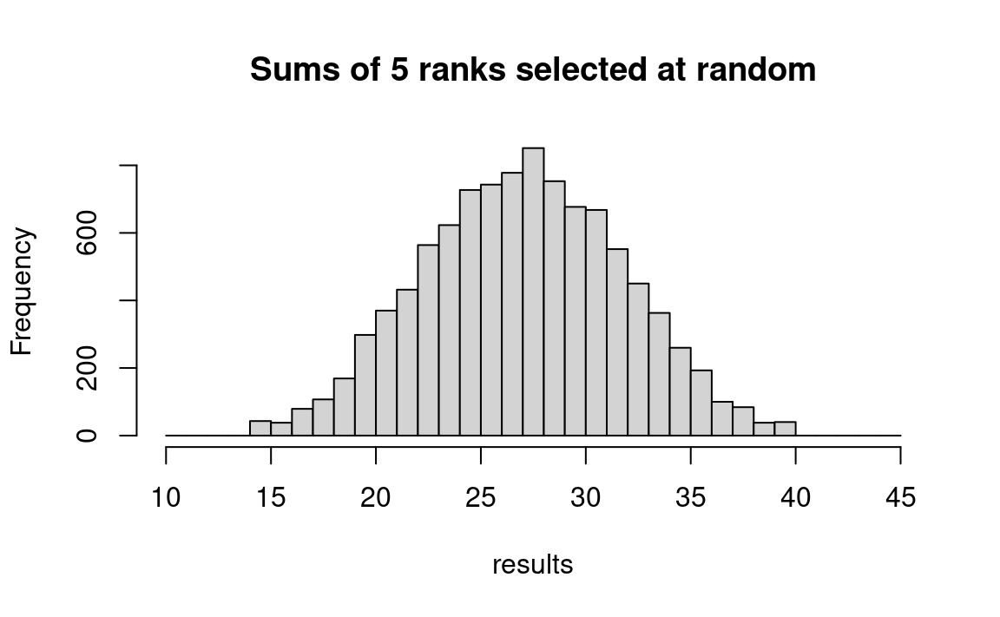
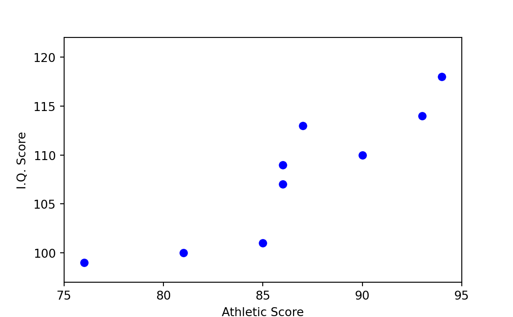
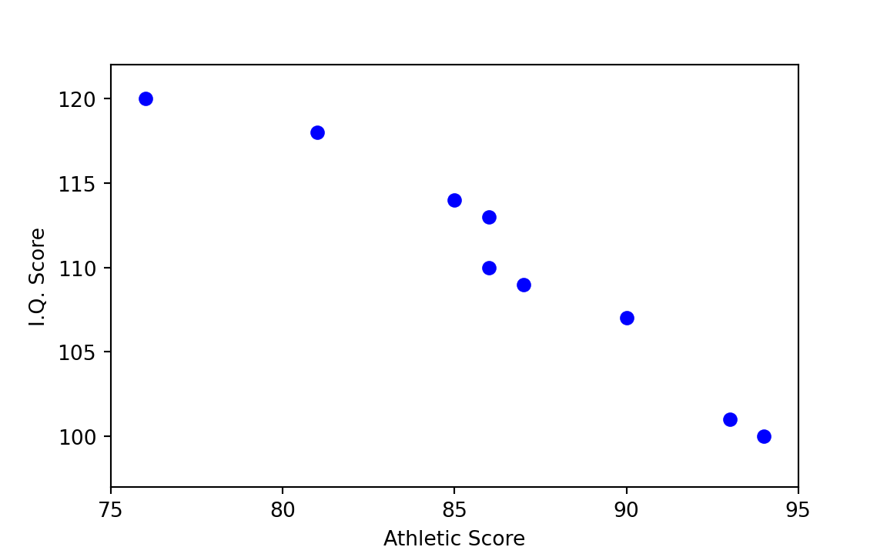
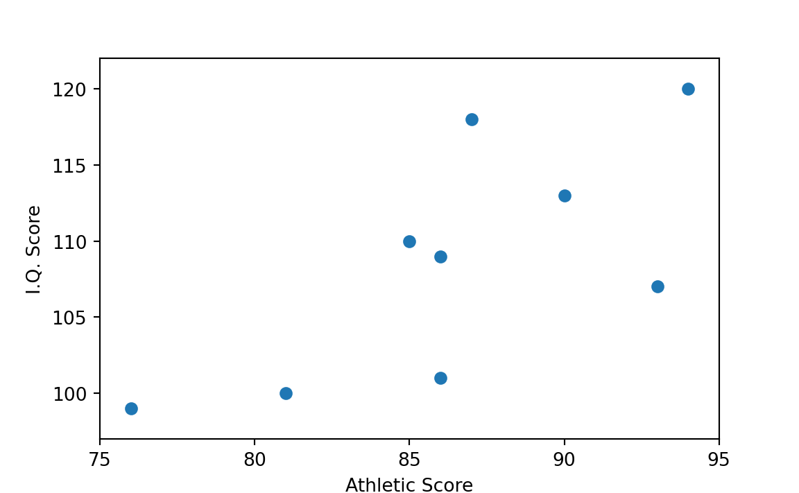
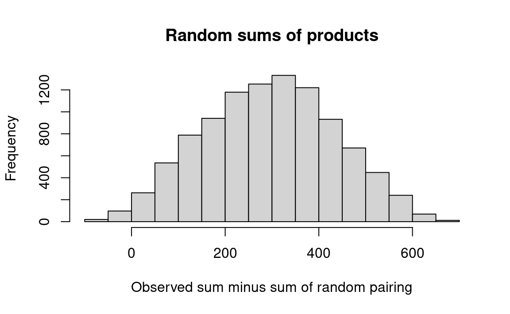
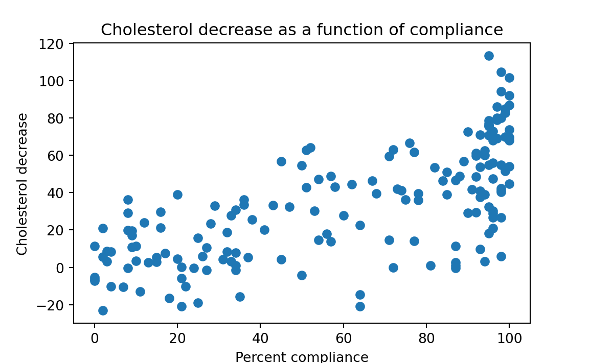
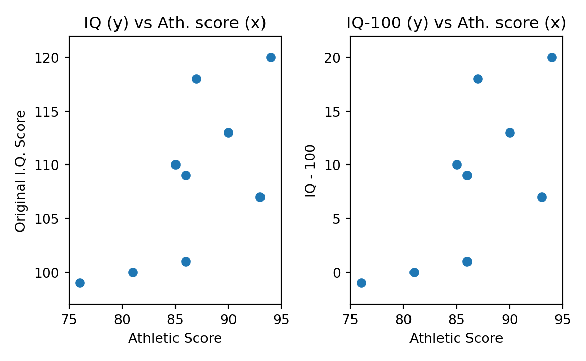
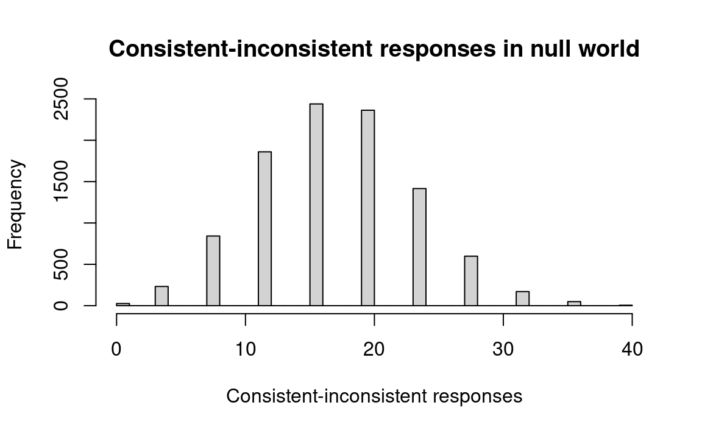
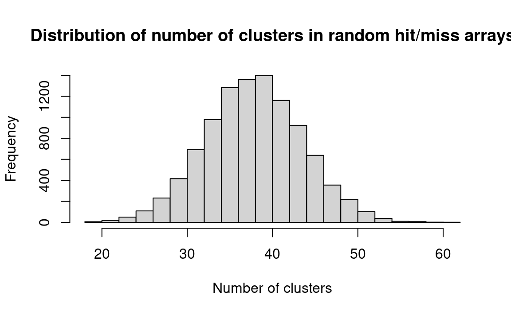

| Athletic Score | I.Q. Score | Athletic Rank | I.Q.Rank |
|---|---|---|---|
| 97 | 114 | 1 | 3 |
| 94 | 120 | 2 | 1 |
| 93 | 107 | 3 | 7 |
| 90 | 113 | 4 | 4 |
| 87 | 118 | 5 | 2 |
| 86 | 101 | 6 | 8 |
| 86 | 109 | 7 | 6 |
| 85 | 110 | 8 | 5 |
| 81 | 100 | 9 | 9 |
| 76 | 99 | 10 | 10 |
29 Correlation and Causation
29.1 Preview
The correlation (speaking in a loose way for now) between two variables measures the strength of the relationship between them. A positive “linear” correlation between two variables \(x\) and \(y\) implies that high values of \(x\) are associated with high values of \(y\), and that low values of \(x\) are associated with low values of \(y\). A negative correlation implies the opposite; high values of \(x\) are associated with low values of \(y\). By definition a “correlation coefficient” (Section 29.5) close to zero indicates little or no linear relationship between two variables; correlation coefficients close to 1 and -1 denote a strong positive or negative relationship. We will start by using a simpler measure of correlation than the correlation coefficient, however.
One way to measure correlation with the resampling method is to rank both variables from highest to lowest, and investigate how often in randomly-generated samples the rankings of the two variables are as close to each other as the rankings in the observed variables. A better approach, because it uses more of the quantitative information contained in the data — though it requires more computation — is to multiply the values for the corresponding pairs of values for the two variables, and compare the sum of the resulting products to the analogous sum for randomly-generated pairs of the observed variable values (Section 29.4). The last section of the chapter (Section 29.6) shows how the strength of a relationship can be determined when the data are counted, rather than measured. First comes some discussion of the philosophical issues involved in correlation and causation.
29.2 Introduction to correlation and causation
The questions in examples Section 12.1 to Section 13.3.3 have been stated in the following form: Does the independent variable (say, irradiation; or type of pig ration) have an effect upon the dependent variable (say, sex of fruit flies; or weight gain of pigs)? This is another way to state the following question: Is there a causal relationship between the independent variable(s) and the dependent variable? (“Independent” or “control” is the name we give to the variable(s) the researcher believes is (are) responsible for changes in the other variable, which we call the “dependent” or “response” variable.)
A causal relationship cannot be defined perfectly neatly. Even an experiment does not determine perfectly whether a relationship deserves to be called “causal” because, among other reasons, the independent variable may not be clear-cut. For example, even if cigarette smoking experimentally produces cancer in rats, it might be the paper and not the tobacco that causes the cancer. Or consider the fabled gentlemen who got experimentally drunk on bourbon and soda on Monday night, scotch and soda on Tuesday night, and brandy and soda on Wednesday night — and stayed sober on Thursday night by drinking nothing. With a vast inductive leap of scientific imagination, they treated their experience as an empirical demonstration that soda, the common element each evening, was the cause of the inebriated state they had experienced. Notice that their deduction was perfectly sound, given only the recent evidence they had. Other knowledge of the world is necessary to set them straight. That is, even in a controlled experiment there is often no way except subject-matter knowledge to avoid erroneous conclusions about causality. Nothing except substantive knowledge or scientific intuition would have led them to the recognition that it is the alcohol rather than the soda that made them drunk, as long as they always took soda with their drinks . And no statistical procedure can suggest to them that they ought to experiment with the presence and absence of soda. If this is true for an experiment, it must also be true for an uncontrolled study.
Here are some tests that a relationship usually must pass to be called causal. That is, a working definition of a particular causal relationship is expressed in a statement that has these important characteristics:
It is an association that is strong enough so that the observer believes it to have a predictive (explanatory) power great enough to be scientifically useful or interesting. For example, he is not likely to say that wearing glasses causes (or is a cause of) auto accidents if the observed correlation coefficient is .071, even if the sample is large enough to make the correlation statistically convincing. In other words, unimportant relationships are not likely to be labeled causal.
Various observers may well differ in judging whether or not an association is strong enough to be important and therefore “causal.” And the particular field in which the observer works may affect this judgment. This is an indication that whether or not a relationship is dubbed “causal” involves a good deal of human judgment and is subject to dispute.
The “side conditions” must be sufficiently few and sufficiently observable so that the relationship will apply under a wide enough range of conditions to be considered useful or interesting. In other words, the relationship must not require too many “if”s, “and”s, and “but”s in order to hold . For example, one might say that an increase in income caused an increase in the birth rate if this relationship were observed everywhere. But, if the relationship were found to hold only in developed countries, among the educated classes, and among the higher-income groups, then it would be less likely to be called “causal” — even if the correlation were extremely high once the specified conditions had been met. A similar example can be made of the relationship between income and happiness.
For a relationship to be called “causal,” there should be sound reason to believe that, even if the control variable were not the “real” cause (and it never is), other relevant “hidden” and “real” cause variables must also change consistently with changes in the control variables. That is, a variable being manipulated may reasonably be called “causal” if the real variable for which it is believed to be a proxy must always be tied intimately to it. (Between two variables, v and w, v may be said to be the “more real” cause and w a “spurious” cause, if v and w require the same side conditions, except that v does not require w as a side condition.) This third criterion (non-spuriousness) is of particular importance to policy makers. The difference between it and the previous criterion for side conditions is that a plenitude of very restrictive side conditions may take the relationship out of the class of causal relationships, even though the effects of the side conditions are known . This criterion of nonspuriousness concerns variables that are as yet unknown and unevaluated but that have a possible ability to upset the observed association.
Examples of spurious relationships and hidden-third-factor causation are commonplace. For a single example, toy sales rise in December. There is no danger in saying that December causes an increase in toy sales, even though it is “really” Christmas that causes the increase, because Christmas and December practically always accompany each other.
Belief that the relationship is not spurious is increased if many likely variables have been investigated and none removes the relationship. This is further demonstration that the test of whether or not an association should be called “causal” cannot be a logical one; there is no way that one can express in symbolic logic the fact that many other variables have been tried without changing the relationship in question.
The more tightly a relationship is bound into (that is, deduced from, compatible with, and logically connected to) a general framework of theory, the stronger is its claim to be called “causal.” For an economics example, observed positive relationships between the interest rate and business investment and between profits and investment are more likely to be called “causal” than is the relationship between liquid assets and investment. This is so because the first two statements can be deduced from classical price theory, whereas the third statement cannot. Connection to a theoretical framework provides support for belief that the side conditions necessary for the statement to hold true are not restrictive and that the likelihood of spurious correlation is not great; because a statement is logically connected to the rest of the system, the statement tends to stand or fall as the rest of the system stands or falls. And, because the rest of the system of economic theory has, over a long period of time and in a wide variety of tests, been shown to have predictive power, a statement connected with it is cloaked in this mantle.
variable completely predicts another with a linear association) through 0 (the variables have no linear association) to -1 (one variable completely predict the other, but positive values in one are associated with negative values in the other).
The social sciences other than economics do not have such well-developed bodies of deductive theory, and therefore this criterion of causality does not weigh as heavily in sociology, for instance, as in economics. Rather, the other social sciences seem to substitute a weaker and more general criterion, that is, whether or not the statement of the relationship is accompanied by other statements that seem to “explain” the “mechanism” by which the relationship operates. Consider, for example, the relationship between the phases of the moon and the suicide rate. The reason that sociologists do not call it causal is that there are no auxiliary propositions that explain the relationship and describe an operative mechanism. On the other hand, the relationship between broken homes and youth crime is often referred to as “causal,” presumably because a large body of psychological theory serves to explain why a child raised without one or the other parent, or in the presence of parental strife, should not adjust readily.
Furthermore, one can never decide with perfect certainty whether in any given situation one variable “causes” a particular change in another variable. At best, given your particular purposes in investigating a phenomena, you may be safe in judging that very likely there is causal influence.
In brief, it is correct to say (as it is so often said) that correlation does not prove causation — if we add the word “completely” to make it “correlation does not completely prove causation.” On the other hand, causation can never be “proven” completely by correlation or any other tool or set of tools, including experimentation. The best we can do is make informed judgments about whether to call a relationship causal.
It is clear, however, that in any situation where we are interested in the possibility of causation, we must at least know whether there is a relationship (correlation) between the variables of interest; the existence of a relationship is necessary for a relationship to be judged causal even if it is not sufficient to receive the causal label. And in other situations where we are not even interested in causality, but rather simply want to predict events or understand the structure of a system, we may be interested in the existence of relationships quite apart from questions about causations. Therefore our next set of problems deals with the probability of there being a relationship between two measured variables, variables that can take on any values (say, the values on a test of athletic scores) rather than just two values (say, whether or not there has been irradiation.)2
Another way to think about such problems is to ask whether two variables are independent of each other — that is, whether you know anything about the value of one variable if you know the value of the other in a particular case — or whether they are not independent but rather are related.
29.3 A Note on Association Compared to Testing a Hypothesis
Problems in which we investigate a) whether there is an association , versus b) whether there is a difference between just two groups, often look very similar, especially when the data constitute a 2-by-2 table. There is this important difference between the two types of analysis, however: Questions about association refer to variables — say weight and age — and it never makes sense to ask whether there is a difference between variables (except when asking whether they measure the same quantity). Questions about similarity or difference refer to groups of individuals , and in such a situation it does make sense to ask whether or not two groups are observably different from each other.
29.3.1 Example: Is Athletic Ability Directly Related to Intelligence?
A more specific version of our question: is there correlation between the two variables or are they independent?
A scientist often wants to know whether or not two characteristics go together, that is, whether or not they are correlated (that is, related or associated). For example, do young adults with high athletic ability tend to also have high I.Q.s?
Hypothetical physical-education scores of a group of ten high-school boys are shown in Table 29.1, ordered from high to low, along with the I.Q. score for each boy. The ranks for each student’s athletic and I.Q. scores are then shown in the third and fourth columns:
Figure 29.1 is a scatterplot with “Athletic Score” on the x-axis and “I.Q. Score” on the y-axis. Each point on the plot corresponds to one row of Table 29.1 (and therefore one boy); in particular each point is at the \(x\), \(y\) coordinate given by the values in “Athletic Score” and “I.Q. Score”. For example the point for the first boy is at position x=97, y=114.

We want to know whether a high score on athletic ability tends to be found along with a high I.Q. score more often than would be expected by chance. Therefore, our strategy is to see how often high scores on both variables are found by chance. We do this by disassociating the two variables and making two separate and independent universes, one composed of the athletic scores and another of the I.Q. scores. Then we draw pairs of observations from the two universes at random, and compare the experimental patterns that occur by chance to what actually is observed to occur in the world.
The first testing scheme we shall use is similar to our first approach to the pig rations — splitting the results into just “highs” and “lows.” We take ten cards, one of each denomination from “ace” to “10,” shuffle, and deal five cards to correspond to the first five athletic ranks. The face values then correspond to the I.Q. ranks. Under the benchmark hypothesis the athletic ranks will not be associated with the I.Q. ranks. Add the face values in the first five cards in each trial; the first hand includes 2, 4, 5, 6, and 9, so the sum is 26. Record, shuffle, and repeat perhaps ten times. Then compare the random results to the sum of the observed ranks of the five top athletes, which equals 17.
The following steps describe a slightly different procedure than that just described, because this one may be easier to understand:
- Step 1. Convert the athletic and I.Q. scores to ranks. Then constitute a universe of spades, “ace” to “10,” to correspond to the athletic ranks, and a universe of hearts, “ace” to “10,” to correspond to the IQ ranks.
- Step 2. Deal out the well-shuffled cards into pairs, each pair with an athletic score and an I.Q. score.
- Step 3. Locate the cards with the top five athletic ranks, and add the I.Q. rank scores on their paired cards. Compare this sum to the observed sum of 17. If 17 or less, indicate “yes,” otherwise “no.” (Why do we use “17 or less” rather than “less than 17”? Because we are asking the probability of a score this low or lower.)
- Step 4. Repeat steps 2 and 3 ten times.
- Step 5. Calculate the proportion “yes.” This estimates the probability sought.
In Table 29.2 we see that the observed sum (17) is lower than the sum of the top 5 ranks in all but one (shown in bold) of the ten random trials (trial 5), which suggests that there is a good chance (9 in 10) that the five best athletes will not have I.Q. scores that high by chance. But it might be well to deal some more to get a more reliable average. We add thirty hands, and thirty-nine of the total forty hands exceed the observed rank value, so the probability that the observed correlation of athletic and I.Q. scores would occur by chance is about .025. In other words, if there is no real association between the variables, the probability that the top 5 ranks would sum to a number this low or lower is only 1 in 40, and it therefore seems reasonable to believe that high athletic ability tends to accompany a high I.Q.
| Trial | Sum of IQ Ranks | <= observed (17) |
|---|---|---|
| 1 | 26 | No |
| 2 | 23 | No |
| 3 | 22 | No |
| 4 | 37 | No |
| 5 | 16 | Yes |
| 6 | 22 | No |
| 7 | 22 | No |
| 8 | 28 | No |
| 9 | 38 | No |
| 10 | 22 | No |
| 11 | 35 | No |
| 12 | 36 | No |
| 13 | 31 | No |
| 14 | 29 | No |
| 15 | 32 | No |
| 16 | 25 | No |
| 17 | 25 | No |
| 18 | 29 | No |
| 19 | 25 | No |
| 20 | 22 | No |
| 21 | 30 | No |
| 22 | 31 | No |
| 23 | 35 | No |
| 24 | 25 | No |
| 25 | 33 | No |
| 26 | 30 | No |
| 27 | 24 | No |
| 28 | 29 | No |
| 29 | 30 | No |
| 30 | 31 | No |
| 31 | 30 | No |
| 32 | 21 | No |
| 33 | 25 | No |
| 34 | 19 | No |
| 35 | 29 | No |
| 36 | 23 | No |
| 37 | 23 | No |
| 38 | 34 | No |
| 39 | 23 | No |
| 40 | 26 | No |
In fact we can apply an even simpler procedure to get the same result, by reasoning about the individual trial.
One trial in our procedure is:
- Step 2. Deal out the well-shuffled cards into pairs, each pair with an athletic score and an I.Q. score.
- Step 3. Locate the cards with the top five athletic ranks, and add the I.Q. rank scores on their paired cards. Compare this sum to the observed sum of 17. If 17 or less, indicate “yes,” otherwise “no.” (Why do we use “17 or less” rather than “less than 17”? Because we are asking the probability of a score this low or lower.)
Now consider the 5 IQ rank cards. In the procedure above, we found these by first pairing the athletic ranks and the IQ ranks, then selecting the IQ ranks corresponding to the top 5 athletic ranks. A little thought may persuade you, that by doing this, we have have a random selection of 5 IQ ranks. We got that random selection by pairing, selecting on athletic rank — but the initial pairing and selection will do nothing other than giving us one particular set of randomly chosen 5 IQ rank cards. So we can simplify our procedure even further by missing out the pairing and selecting by rank steps; we can just shuffle the IQ rank cards and deal out 5 to be our randomly selected IQ ranks.
Start of athlete_iq notebook
To simulate this problem in R, we first create a vector containing the I.Q. rankings of the top 5 students in athletics. The sum of these I.Q. rankings constitutes the observed result to be tested against randomly-drawn samples. We observe that the actual I.Q. rankings of the top five athletes sums to 17. The more frequently that the sum of 5 randomly-generated rankings (out of 10) is as low as this observed number, the higher is the probability that there is no relationship between athletic performance and I.Q. based on these data.
First we record the 1 through 10 into vector iq_ranks. Then we shuffle the numbers so the rankings are in a random order. Then select the first 5 of these numbers and put them in another vector, top_5, and sum them, putting the result in top_5_sum. We repeat this procedure N = 10000 times, recording each result in a scorekeeping vector: z. Graphing z, we get a histogram that shows us how often our randomly assigned sums are equal to or below 17.
# Number of repeats.
n_trials <- 10000
# The IQ ranks, ready for shuffling.
iq_ranks <- 1:10 # 1 through 10.
# Scorekeeping array.
results <- numeric(n_trials)
for (i in 1:n_trials) {
# Shuffle the ranks.
shuffled <- sample(iq_ranks)
# Take the first 5 ranks.
top_5 <- shuffled[1:5]
# Sum those ranks.
top_5_sum <- sum(top_5)
# Keep track of the result of each trial.
results[i] <- top_5_sum
# End the experiment, go back and repeat.
}
# Produce a histogram of trial results.
# Make the bins be the integers from 10 through 45.
hist(results, breaks=10:45, main='Sums of 5 ranks selected at random')
We see that in only about 2 % of the trials did random selection of ranks produce a total of 17 or lower. R can calculate this for us directly:
# Determine how many trials produced sums of ranks <= 17 by chance.
k <- sum(results <= 17)
# The proportion.
kk <- k / n_trials
# Show the result.
kk[1] 0.016End of athlete_iq notebook
Why do we sum the ranks of the first five athletes rather than taking the sum of the top three, say? Indeed, we could have looked at the top three, two, four, or even six or seven. The first reason for splitting the group in half is that an even split uses the available information more fully, and therefore we obtain greater efficiency. (I cannot prove this formally here, but perhaps it makes intuitive sense to you.) A second reason is that getting into the habit of always looking at an even split reduces the chances that you will pick and choose in such a manner as to fool yourself. For example, if the I.Q. ranks of the top five athletes were 3, 2, 1, 10, and 9, we would be deceiving ourselves if, after looking the data over, we drew the line between athletes 3 and 4. (More generally, choosing an appropriate measure before examining the data will help you avoid fooling yourself in such matters.)
A simpler but less efficient approach to this same problem is to classify the top-half athletes by whether or not they were also in the top half of the I.Q. scores. Of the first five athletes actually observed, four were in the top five I.Q. scores. We can then shuffle five black and five red cards and see how often four or more (that is, four or five) blacks come up with the first five cards. The proportion of times that four or more blacks occurs in the trial is the probability that an association as strong as that observed might occur by chance even if there is no association. Table 29.3 shows a proportion of five trials out of twenty.
| Trial | Score | Yes or No |
|---|---|---|
| 1 | 4 | Yes |
| 2 | 2 | No |
| 3 | 2 | No |
| 4 | 2 | No |
| 5 | 3 | No |
| 6 | 2 | No |
| 7 | 4 | Yes |
| 8 | 3 | No |
| 9 | 3 | No |
| 10 | 4 | Yes |
| 11 | 3 | No |
| 12 | 1 | No |
| 13 | 3 | No |
| 14 | 3 | No |
| 15 | 4 | Yes |
| 16 | 3 | No |
| 17 | 2 | No |
| 18 | 2 | No |
| 19 | 2 | No |
| 20 | 4 | Yes |
Start of athlete_iq_rank_count notebook
In the R code below, we first note that the top 5 athletes had 4 of the top 5 I.Q. scores. So we constitute the set of 10 IQ rankings vector iq_ranks. We then shuffle iq_ranks and select the first 5 I.Q. rankings (out of 10). We count (sum) how many are in the top 5, and keep track of the result. After repeating 10,000 times using a for loop, we find out how often we select 4 of the top 5.
# Number of repeats.
n_trials <- 10000
# The IQ ranks, ready for shuffling.
iq_ranks <- 1:10 # 1 through 10.
# Scorekeeping array.
results <- numeric(n_trials)
for (i in 1:n_trials) {
# Shuffle the ranks.
shuffled <- sample(iq_ranks)
# Take the first 5 ranks.
top_5 <- shuffled[1:5]
# Everything up until this point is the same as the code above.
# Here is the difference.
# Check whether the selected IQ ranks are in the top 5.
are_top <- top_5 <= 5
# Count how many were in the top 5
n_are_top <- sum(are_top)
# Keep track of the result of each trial.
results[i] <- n_are_top
# End the experiment, go back and repeat.
}
# Determine how many trials produced 4 or more top ranks by chance.
k = sum(results >= 4)
# Convert to a proportion.
kk = k / n_trials
# Show the result.
kk[1] 0.103End of athlete_iq_rank_count notebook
So far we have proceeded on the theory that if there is any relationship between athletics and I.Q., then the better athletes have higher rather than lower I.Q. scores. The justification for this assumption is that past research suggests that it is probably true. But if we had not had the benefit of that past research, we would then have had to proceed somewhat differently; we would have had to consider the possibility that the top five athletes could have I.Q. scores either higher or lower than those of the other students. The results of the “two-tail” test would have yielded odds weaker than those we observed.
29.3.2 Example: Athletic ability and I.Q. — a third way
The example in Section 29.3.1 investigated the relationship between I.Q. and athletic score by ranking the two sets of scores. But ranking of scores loses some efficiency because it uses only an “ordinal” (rank-ordered) rather than a “cardinal” (measured) scale; the numerical shadings and relative relationships are lost when we convert to ranks. Therefore let us consider a test of correlation that uses the original cardinal numerical scores.
First a little background: Figure 29.2 and Figure 29.3 show two hypothetical cases of very high association among the I.Q. and athletic scores used in previous examples. Figure 29.2 indicates that the higher the I.Q. score, the higher the athletic score. With a boy’s athletic score you can thus predict quite well his I.Q. score by means of a hand-drawn line — or vice versa. The same is true of Figure 29.3, but in the opposite direction. Notice that even though athletic score is on the x-axis (horizontal) and I.Q. score is on the y-axis (vertical), the athletic score does not cause the I.Q. score. (It is an unfortunate deficiency of such diagrams that some variable must arbitrarily be placed on the x-axis, whether you intend to suggest causation or not.)


In Figure 29.4, which plots the scores as given in Table 29.1, the prediction of athletic score given I.Q. score, or vice versa, is less clear-cut than in Figure 29.2. On the basis of Figure 29.4 alone, one can say only that there might be some association between the two variables.

29.4 Correlation with sum of products
Now let us take advantage of a handy property of numbers. The more closely two sets of numbers match each other in order, the higher the sums of their products. Consider the following arrays of the numbers 1, 2, and 3:
Columns in matching order
\[ \begin{align*} 1 * 1 = 1 \\ 2 * 2 = 4 \\ 3 * 3 = 9 \\ \\ \mathrm{SUM} = 14 \end{align*} \]
Columns not in matching order
\[ \begin{align*} 1 * 2 = 2 \\ 2 * 3 = 6 \\ 3 * 1 = 3 \\ \\ \mathrm{SUM} = 11 \end{align*} \]
I will not attempt a mathematical proof, but the reader is encouraged to try additional combinations to be sure that the highest sum is obtained when the order of the two columns is the same. Likewise, the lowest sum is obtained when the two columns are in perfectly opposite order:
Columns in opposite order
\[ \begin{align*} 1 * 3 = 3 \\ 2 * 3 = 4 \\ 3 * 1 = 3 \\ \\ \mathrm{SUM} = 10 \end{align*} \]
Consider the cases in Table 29.4 which are chosen to illustrate a perfect (linear) association between x (Column 1) and y1 (Column 2), and also between x (Column 1) and y2 (Column 4); the numbers shown in Columns 3 and 5 are those that would be consistent with perfect associations. Notice the sum of the multiples of the x and y values in the two cases. It is either higher (x * y1) or lower (x * y2) than for any other possible way of arranging the y’s. Any other arrangement of the y’s (y3, in Column 6, for example, chosen at random), when multiplied by the x’s in Column 1, (x * y3), produces a sum that falls somewhere between the sums of x * y1 and x * y2, as is the case with any other set of y3’s which is not perfectly correlated with the x’s.
| Strong positive relationship | Strong negative relationship | Random Pairings | ||||
|---|---|---|---|---|---|---|
| X | Y1 | X * Y1 | Y2 | X * Y2 | Y3 | X * Y3 |
| 2 | 2 | 4 | 10 | 20 | 4 | 8 |
| 4 | 4 | 8 | 8 | 32 | 8 | 32 |
| 6 | 6 | 36 | 6 | 36 | 6 | 36 |
| 8 | 8 | 64 | 4 | 32 | 2 | 16 |
| 10 | 10 | 100 | 2 | 20 | 10 | 100 |
| Sums | 220 | 140 | 192 | |||
29.4.1 Example: sum of products correlation of athletic and IQ scores
?tbl-ath-iq-products shows that the sum of the products of the observed I.Q. scores multiplied by athletic scores (column 7) is between the sums that would occur if the I.Q. scores were ranked from best to worst (column 3) and worst to best (column 5). The extent of correlation (association) can thus be measured by whether the sum of the multiples of the observed x and y values is relatively much higher or much lower than are sums of randomly-chosen pairs of x and y .
: Sums of Products: IQ and Athletic Scores {#tbl-ath-iq-products}}
?tbl-ath-iq-products show three cases of products:
- Perfect positive correlation (hypothetical); column 3
- Perfect negative correlation (hypothetical); column 5
- Observed; column 7
Now we attack the I.Q. and athletic-score problem using the property of numbers just discussed. First multiply the \(x\) and \(y\) values of the actual observations, and sum them; we find a total of 95,759 (?tbl-ath-iq-products). Then write the ten observed I.Q. scores on cards, and assign the cards in random order to the ten athletes, as shown in the column for trial 1 in ?tbl-random-ath-iq.
Multiply the random IQ scores by their paired \(x\)’s (Athletic scores), and sum to give the values at the bottom of ?tbl-random-ath-iq. If the I.Q. scores and athletic scores are positively associated, that is, if high I.Q.s and high athletic scores go together, then the sum of the multiplications for the observed sample will be higher than for most of the random trials. (If high I.Q.s go with low athletic scores, the sum of the multiplications for the observed sample will be lower than most of the random trials.)
: Random Draws of IQ scores paired against athletic scores {#tbl-random-ath-iq}
More specifically, by the steps:
- Step 1. Write the ten I.Q. scores on one set of cards, and the ten athletic scores on another set of cards.
- Step 2. Pair the I.Q. and athletic-score cards at random. Multiply the scores in each pair, and add the results of the ten multiplications.
- Step 3. Subtract the experimental sum in step 2 from the observed sum, 95,759.
- Step 4. Repeat steps 2 and 3 ten times.
- Step 5. Compute the proportion of trials where the difference is negative, which estimates the probability that an association as strong as the observed would occur by chance.
The sums of the multiplications for 10 trials are shown in ?tbl-random-ath-iq. No random-trial sum was as high as the observed sum, which suggests that the probability of an association this strong happening by chance is so low as to approach zero. (An empirically-observed probability is never actually zero.)
This algorithm can be solved particularly easily with R. The vectors ath and iq in the notebook below list the athletic scores and the I.Q. scores respectively of the 10 “actual” students. We multiply the corresponding elements of these vectors and proceed to compare the sum of these multiplications to the sums of experimental multiplications in which the elements of iq have been randomly permuted, to form random pairings.
Finally, we count (sum) the trials in which the sum of the products of the randomly-paired athletic and I.Q. scores equals or exceeds the sum of the products in the observed data.
Notebook with data file
As have seen already (see ?sec-download-links),the download link points to a .zip file containing the notebook and the data file the notebook will read.
Start of athlete_iq notebook
We load the file containing the data:
# Read the data file containing athletic and IQ scores.
ath_iq_df <- read.csv('data/athletic_iq.csv')
# Show the data frame.
ath_iq_df athletic_score iq_score athletic_rank iq_rank
1 97 114 1 3
2 94 120 2 1
3 93 107 3 7
4 90 113 4 4
5 87 118 5 2
6 86 101 6 8
7 86 109 7 6
8 85 110 8 5
9 81 100 9 9
10 76 99 10 10# Turn athletic and IQ scores into vectors.
ath = ath_iq_df$athletic_score
iq = ath_iq_df$iq_score# Multiply the two sets of scores together.
actual_prod <- ath * iq
# Sum the results — the "observed value."
actual_sum <- sum(actual_prod)
actual_sum[1] 95759# Set the number of trials
n_trials <- 10000
# An empty array to store the trial results.
results <- numeric(n_trials)
# Do 10,000 experiments.
for (i in 1:n_trials) {
# Shuffle the IQ scores so we can pair them against athletic scores.
shuffled <- sample(iq)
# Multiply the shuffled IQ scores by the athletic scores. (Note that we
# could shuffle the athletic scores too but it would not achieve any
# greater randomization, because shuffling one of the set of scores
# already gives a random pairing between the sets of scores.
fake_prod <- ath * shuffled
# Sum the randomized multiplications.
fake_sum <- sum(fake_prod)
# Subtract the sum from the sum of the "observed" multiplication.
diff <- actual_sum - fake_sum
# Keep track of the result in results array.
results[i] <- diff
# End one trial, go back and repeat until 10000 trials are complete.
}
# Obtain a histogram of the trial results.
hist(results, breaks=25,
main='Random sums of products',
xlab='Observed sum minus sum of random pairing')
We see that obtaining a chance trial result as great as that observed was rare. R will calculate this proportion for us:
# Determine in how many trials the random sum of products was less than
# the observed sum of products.
k <- sum(results <= 0)
# Convert to a proportion.
kk <- k / n_trials
# Print the result.
message('Proportion of random pairings giving sum <= observed: ', kk)Proportion of random pairings giving sum <= observed: 0.0117End of athlete_iq notebook
29.4.2 Example: Correlation Between Adherence to Medication Regime and Change in Cholesterol
Efron and Tibshirani (1993, 72) show data on the extents to which 164 men a) took the drug prescribed to them (cholestyramine), and b) showed a decrease in total plasma cholesterol. Table 29.5 shows the first 15 of the values (note that a positive value in the “Decrease in cholesterol” column denotes a decrease in cholesterol, while a negative value denotes an increase.)
| % compliance | Decrease in cholesterol |
|---|---|
| 0 | -5.25 |
| 27 | -1.50 |
| 71 | 59.50 |
| 95 | 32.50 |
| 0 | -7.25 |
| 28 | 23.50 |
| 71 | 14.75 |
| 95 | 70.75 |
| 0 | -6.25 |
| 29 | 33.00 |
| 72 | 63.00 |
| 95 | 18.25 |
| 0 | 11.50 |
| 31 | 4.25 |
| 72 | 0.00 |
The aim is to assess the effect of the compliance on the improvement. There are two related issues:
- What form of regression should be fitted to these data, which we address later, and
- Is there reason to believe that the relationship is meaningful? That is, we wish to ascertain if there is any meaningful correlation between the variables — because if there is no relationship between the variables, there is no basis for regressing one on the other. Sometimes people jump ahead in the latter question to first run the regression and then ask whether the regression slope coefficient(s) is (are) different than zero, but this usually is not sound practice. The sensible way to proceed is first to graph the data to see whether there is visible indication of a relationship.
Efron and Tibshirani do this, and they find sufficient intuitive basis in the graph to continue the analysis (see Figure 29.5).

The next step is to investigate whether a measure of relationship is statistically convincing; this we do as follows:
- Multiply the observed values for each of the 164 participants on the independent \(x\) variable (cholestyramine — percent of prescribed dosage actually taken) and the dependent \(y\) variable (cholesterol), and sum the results — it’s 439,141.
- Randomly shuffle the dependent variable \(y\) values among the participants. The sampling is being done without replacement, though an equally good argument could be made for sampling with replacement; the results do not differ meaningfully, however, because the sample size is so large.
- Then multiply these \(x\) and \(y\) hypothetical values for each of the 164 participants, sum the results and record.
- Repeat steps 2 and 3 perhaps 10,000 times.
- Determine how often the shuffled sum-of-products exceeds the observed value (439,141).
The following notebook in R provides the solution:
Start of compliance_cholesterol notebook
# Data as vectors.
df <- read.csv('data/cholost.csv')
compliance <- df$percent_compliance
cholesterol <- df$cholesterol_decrease
# Rename the two sequences to match the description in the text.
x <- compliance
y <- cholesterol
# Step 1 above
actual_prod <- x * y
# Note: actual_sum <- 439,141
actual_sum <- sum(actual_prod)
# Show the result.
actual_sum[1] 439141# Set the number of trials
n_trials <- 10000
# An empty array to store the trial results.
results <- numeric(n_trials)
# Do 10,000 experiments (step 4)
for (i in 1:n_trials) {
# Step 2 above.
y_random <- sample(y)
# Step 3 above.
fake_prod <- x * y_random
fake_sum <- sum(fake_prod)
# Step 3 above
results[i] <- fake_sum
# Step 4 above
}
# Step 5 above
k <- sum(results >= actual_sum)
kk <- k / n_trials
message('Proportion product sums >= observed: ', kk)Proportion product sums >= observed: 0End of compliance_cholesterol notebook
Interpretation: 10,000 simulated random shufflings never produced a sum-of-products as high as the observed value. Hence we conclude that random chance is a very unlikely explanation for the observed correlation.
29.5 The correlation coefficient
We have been using the sum of products as a measure of straight-line (linear) association between two variables. We found that the sum of products for the athletic and IQ variables (ath and iq) was 95759, and we showed that the sum of products is higher for pairings of ath and iq with a higher degree of linear association. Now let us consider compliance and cholesterol above; the sum of products for compliance and cholesterol was 439141. Notice the compliance and cholesterol sum of products is much higher than for ath and iq — but, for various reasons that we explain below, that does not tell us whether the association of the scores is higher for the compliance / cholesterol values than the athletic / IQ scores. We would like a version of the sum of products procedure that could give us a measure of linear association that we could compare between different pairs of sequences. This is the purpose of the correlation coefficient.
The first problem that makes it hard to compare the sum of product scores is that the sum of products depends on the number of elements in the sequence. ath (and iq) have 10 elements, whereas compliance (and cholesterol) have 164 elements. The sum of products is a sum; all other things being equal, the more values you sum, the higher the sum; all other things being equal, the sum of 164 elements will be greater than the sum of 10 elements. We can solve this problem by dividing the sum of products by the number of elements in that sum, to get the mean of the products. The mean of product values for the athletic / IQ scores is 95759 / 10 = 9575.9. The mean of products for compliance / cholesterol is 439141 / 164 = 2677.69.
We have solved one problem in comparing the measure by taking the mean of products — the value no longer depends on the number of elements. We have other problems. For example, consider the IQ scores. We have used the raw IQ scores, on their usual scale, where 100 is the average IQ for the general population. Our raw IQ scores have a mean of 109.1. But we could also have scored IQ in another way. For example, we could have recorded the difference from 100 instead of the raw value, to get the values in column 2 of Table 29.6. Call these the “IQ-100” scores. IQ-100 scores have a mean of 9.1.
| 1 | 2 | 3 | 4 | 5 |
|---|---|---|---|---|
| Athletic score | Original IQ | Col 1 x Col 2 | IQ-100 | Col 2 x Col 4 |
| 97 | 114 | 11058 | 14 | 1358 |
| 94 | 120 | 11280 | 20 | 1880 |
| 93 | 107 | 9951 | 7 | 651 |
| 90 | 113 | 10170 | 13 | 1170 |
| 87 | 118 | 10266 | 18 | 1566 |
| 86 | 101 | 8686 | 1 | 86 |
| 86 | 109 | 9374 | 9 | 774 |
| 85 | 110 | 9350 | 10 | 850 |
| 81 | 100 | 8100 | 0 | 0 |
| 76 | 99 | 7524 | -1 | -76 |
| SUMS | 95759 | 8259 | ||
| MEANS | 9575.9 | 825.9 |
Notice that the mean product for the IQ-100 scores is much smaller than the mean for the product with the original IQ values, because the IQ element in the product is smaller, so the products will be smaller, and the mean product will be smaller. However, it might be obvious that the association of the IQ and athletic scores remains the same after we have subtracted 100 from the IQ; higher IQ values on either scale are still associated with higher athletic scores. Think of the association as a straight-line relationship in a scatter plot, with the athletic scores on the x-axis, and the IQ scores on the y-axis. Figure 29.1 has the original scatter plot with the athletic scores on the x-axis and the original IQ scores on the y-axis. The points appear to scatter around some straight line we could draw. Figure 29.6 shows the scatterplot of the original IQ score against the athletic scores on the left plot (as for Figure 29.1) and the IQ-100 scores against the athletic scores in the right plot. As you can see, subtracting 100 from the IQ values just moved the points on the graph down by 100 on the y-axis — but the slope of the line relating the two must be the same. The slope is a measure of how much the IQ score increases as the athletic score increases — it is therefore a good measure of the linear association between athletic score and IQ score. Because the slope of our potential line should not change between the original IQ score and the IQ-100 score, the association has not changed, even though the mean product is much smaller.

We have discovered that the mean product will change as we add or subtract values to one or both of the sequences. You might also be able to see that the mean product will change if we multiply or divide the values in the sequence by some number. In summary, the mean product depends on the scale or units of the values in the sequence.
We would like some measure of association that does not depend on the scale of the sequences. A simple approach is to put each sequence on a standard scale, by converting the original sequence values to standard scores (see Section 16.9).
We do this by:
- Subtracting the mean value from each element in the sequence to give the deviations.
- Dividing the deviations by a measure of spread — the standard deviation (see Section 16.7).
See Table 29.7 for an example of applying this algorithm to the IQ scores. We get the deviations by subtracting the mean IQ (109.1), and the standard scores by dividing the deviations by the IQ standard deviation (7.02).
| Original IQ | IQ deviations | Standard scores |
|---|---|---|
| 114 | 4.9 | 0.7 |
| 120 | 10.9 | 1.55 |
| 107 | -2.1 | -0.3 |
| 113 | 3.9 | 0.56 |
| 118 | 8.9 | 1.27 |
| 101 | -8.1 | -1.15 |
| 109 | -0.1 | -0.01 |
| 110 | 0.9 | 0.13 |
| 100 | -9.1 | -1.3 |
| 99 | -10.1 | -1.44 |
After we apply this procedure to both sequences, they are both in the same standard units. The mean product of these standard units is therefore a standard measure of association, called the Pearson product-moment correlation coefficient, or just the correlation coefficient. We use the letter \(r\) for the value of the correlation coefficient. ?tbl-r-iq shows the mean of products calculation on standard scores athletic ability and IQ, to get the \(r\) value.
: \(r\) for Athletic and IQ scores {#tbl-r-iq}}
Because the sequences for the correlation coefficient \(r\) are in the same units, we can compare correlation coefficients between different sequences, to give a standard measure of association. For example, we can run the same calculation on the compliance and cholesterol values, to get the \(r\) value (correlation coefficient) for these sequences. Let’s do that in R:
Start of r_for_cholesterol notebook
df <- read.csv('data/cholost.csv')
compliance <- df$percent_compliance
cholesterol <- df$cholesterol_decrease
# Compliance as standard scores.
dev_compliance <- compliance - mean(compliance) # Deviations.
stdev_compliance <- sqrt(mean(dev_compliance ** 2)) # Standard deviation.
std_compliance <- dev_compliance / stdev_compliance # Standard scores.
# Cholesterol as standard scores.
dev_cholesterol <- cholesterol - mean(cholesterol) # Deviations.
stdev_cholesterol <- sqrt(mean(dev_cholesterol ** 2)) # Standard deviation.
std_cholesterol <- dev_cholesterol / stdev_cholesterol # Standard scores.
# r value is mean of product for standardized scores.
r <- mean(std_compliance * std_cholesterol)
message('r for compliance / cholesterol is: ', round(r, 2))r for compliance / cholesterol is: 0.68End of r_for_cholesterol notebook
Notice that the \(r\) value is higher for the athletic and IQ scores (0.71) than it is for compliance and cholesterol (0.68). Because we have measured the association in standard units, we can compare these values, and say there is a slightly stronger linear association for our athletic and IQ scores, than there is for our compliance and cholesterol scores.
29.5.1 Correlations are symmetrical
You might be able to see from the definition of the calculation above, that the correlation coefficient \(r\) between ath and iq must be the same as the correlation coefficient (\(r\)) between iq and ath — and in general the correlation coefficient between some sequence \(x\) and another \(y\) is equal to the correlation coefficient between \(y\) and \(x\).
Why? Remember that the correlation coefficient is the mean of the product of the standard scores.
Let us first calculate the standard scores for ath and iq:
# Athletic scores.
dev_ath <- ath - mean(ath) # Deviations.
stdev_ath <- sqrt(mean(dev_ath ** 2)) # Standard deviation.
std_ath = dev_ath / stdev_ath # Standard scores.
# IQ scores.
dev_iq <- iq - mean(iq) # Deviations.
stdev_iq <- sqrt(mean(dev_iq ** 2)) # Standard deviation.
std_iq = dev_iq / stdev_iq # Standard scores.Now calculate the correlation coefficient.
message('r value for "ath" and "iq": ', mean(std_ath * std_iq))r value for "ath" and "iq": 0.709311774030946But multiplication is commutative — changing the order does not change the result — so \(a * b = b * a\). This means that the std_ath * std_id gives the same vector as std_id * std_ath, and:
message('r value for "iq" and "ath": ', mean(std_iq * std_ath))r value for "iq" and "ath": 0.70931177403094629.5.2 The correlation coefficient in R
R has a function cor for calculating the correlation coefficient between two sequences directly.
cor works as you would expect:
cor(ath, iq)[1] 0.70929.5.3 Test linear association with the correlation coefficient
Above we used the sum-of-products calculation to see if the actual observed sum of products was unusual in the null-world. We simulated sum of product values in the null-world by permuting one of the sequences, and recalculating the sum of products.
We could use the correlation coefficient instead of the sum of products as our measure of association, and simulate correlation coefficients in the null-world. We will come to the same conclusion using sum of products as we would for correlation coefficients because they are equivalent when comparing between two different orderings of the same sequences of values. The only advantage of the correlation coefficient for this case is that R has the ready-made function cor to do the calculation. Here is the test for linear association using the correlation coefficient instead of the sum of products. Compare the procedure below to Section 29.4.1.
Start of athlete_iq_cc notebook
# Read the data file containing athletic and IQ scores.
ath_iq_df <- read.csv('data/athletic_iq.csv')
# Turn athletic and IQ scores into vectors.
ath = ath_iq_df$athletic_score
iq = ath_iq_df$iq_score
# Calculate correlation coefficient.
actual_r <- cor(ath, iq)
# Set the number of trials for the null-world simulation.
n_trials <- 10000
# An empty array to store the trial results.
results <- numeric(n_trials)
# Do 10,000 experiments.
for (i in 1:n_trials) {
# Shuffle the IQ scores so we can pair them against athletic scores.
shuffled <- sample(iq)
# Calculate the correlation coefficient.
fake_r <- cor(ath, shuffled)
# Keep track of the result in results array.
results[i] <- fake_r
# End one trial, go back and repeat until 10000 trials are complete.
}
# Obtain a histogram of the trial results.
hist(results, breaks=25,
main='Random correlation coefficients',
xlab='Observed r values from random pairing')
# Determine in how many trials the random r value was greater than
# the observed r value.
k <- sum(results >= actual_r)
# Convert to a proportion.
kk <- k / n_trials
# Print the result.
message('Proportion of random pairings giving r >= observed: ', kk)Proportion of random pairings giving r >= observed: 0.0107
End of athlete_iq_cc notebook
Notice we get a very similar proportion (p-value) with the correlation coefficient to the one from sum of products in Section 29.4.1; in fact, the p-values only differ because the p-value is itself somewhat random, as it derives from (many) random samples.
29.6 Testing for a relationship between counted-data variables
29.6.1 Example: Drinking Beer And Being In Favor of Selling Beer
Earlier in this chapter, we analyzed measured values for athletic ability and I.Q. We can use them in their original “cardinal” form, or split them up into “high” and “low” groups. Often, however, the individual observations are recorded only as categories such “yes” or “no,” which makes it more difficult to ascertain the existence of a relationship. Consider the poll responses in Table 29.8 to two public-opinion survey questions: “Do you drink beer?” and “Are you in favor of a local option on the sale of beer?”.3
| Do you favor local option on the sale of beer? | Do you drink beer? | ||
| Yes | No | Total | |
| Favor | 45 | 20 | 65 |
| Don’t favor | 7 | 6 | 13 |
| Total | 52 | 26 | 78 |
Here is the statistical question: Is a person’s opinion on “local option” related to whether or not they drink beer? Our resampling solution begins by noting that there are seventy-eight respondents, sixty-five of whom approve local option and thirteen of whom do not. Therefore write “approve” on sixty-five index cards and “not approve” on thirteen index cards. Now take another set of seventy-eight index cards, preferably of a different color, and write “yes” on fifty-two of them and “no” on twenty-six of them, corresponding to the numbers of people who do and do not drink beer in the sample. Now lay them down in random pairs , one from each pile.
If there is a high association between the variables, then real life observations will bunch up in the two diagonal cells in the upper left and lower right in Table 29.8. (Ignore the “total” data for now.) Put another way, people filling in the upper left and lower right cells are people with views compatible with their drinking habits (drink-yes / favor, or drink-no / don’t favor). Conversely, people filling in the lower left and upper right cells have views incompatible with their drinking habits (drink-yes, don’t favor, or drink-no, favor). Adding up the upper left / lower right diagonal gives us the total number of compatible responses, and adding the lower left / upper right diagonal gives us the incompatible total. Therefore, et an index of how strongly the table show compatible responses, we can subtract the incompatible total (lower left plus upper right) from the compatible total (upper left plus lower right) for the observed data: (45 + 6) - (20 + 7) = 24. Then compare this difference to the comparable differences found in random trials. The proportion of times that the simulated-trial difference exceeds the observed difference is the probability that the observed difference of +24 might occur by chance, even if there is no relationship between the two variables. (Notice that, in this case, we are working on the assumption that beer drinking is positively associated with approval of local option and not the inverse. We are interested only in differences that are equal to or exceed +24 when the northeast-southwest diagonal is subtracted from the northwest-southeast diagonal.)
We can carry out a resampling test with this procedure:
- Step 1. Write “approve” on 65 and “disapprove” on 13 red index cards, respectively; write “Drink” and “Don’t drink” on 52 and 26 white cards, respectively.
- Step 2. Pair the two sets of cards randomly. Count the numbers of the four possible pairs: (1) “approve-drink,” (2) “disapprove-don’t drink,” (3) “disapprove-drink,” and (4) “approve-don’t drink.” Record the number of these combinations, as in Table 23-10, where columns 1-4 correspond to the four cells in Table 23-9.
- Step 3. Add (column 1 plus column 4), then add (column 2 plus column 3), and subtract the result in the second parenthesis from the result in the first parenthesis. If the difference is equal to or greater than 24, record “yes,” otherwise “no.”
- Step 4. Repeat steps 2 and 3 perhaps a hundred times.
- Step 5. Calculate the proportion “yes,” which estimates the probability that an association this great or greater would be observed by chance.
| 1 | 2 | 3 | 4 | 5 | |
|---|---|---|---|---|---|
| Trial | Approve Yes | Approve No | Disapprove Yes | Disapprove No | (Col 1 + Col 4) - (Col 2 + Col 3) |
| 1 | 43 | 22 | 9 | 4 | 47 - 31 = 16 |
Table 29.9 shows the result of one such trial. When we run a series of ten trials such trials, it indicates that the observed difference is very often exceeded, which suggests that we have no good evidence here for a relationship between beer drinking and opinion.
The R notebook below does this repetitively. From the “actual” sample results we know that 52 respondents drink beer and 26 do not. We create the vector “drink” with 52 1’s for those who drink beer, and 26 0’s for those who do not. We also create the vector “sale” with 65 1’s (approve) and 13 0’s (disapprove). In the actual sample, 51 of the 78 respondents had “consistent” responses to the two questions — that is, people who both favor the sale of beer and drink beer, or who are against the sale of beer and do not drink beer. We want to randomly pair the responses to the two questions to compare against that observed result to test the relationship.
To accomplish this aim, we repeat the following procedure 10,000 times using a for loop. We shuffle drink to random_drink so that the responses are randomly ordered. Now when we subtract the corresponding elements of the two vectors, a 0 will appear in each element of the new vector diffs for which there was consistency in the response of the two questions. We therefore count (sum) the times that diffs equals 0 and place this result in the vector consistent and the number of times diffs does not equal 0, and place this result in inconsistent. Find the difference (consistent minus inconsistent), and record the result in the results vector for each trial.
results stores, for each trial, the number of consistent responses minus inconsistent responses. To determine whether the results of the actual sample indicate a relationship between the responses to the two questions, we check how often the random trials had a difference (between consistent and inconsistent responses) as great as 24, the value in the observed sample.
# Constitute the set of 52 beer drinkers, and the set of 26 non-drinkers,
# where 1 represents beer drinker, and 0 represents non-drinker.
drink <- rep(c(1, 0), c(52, 26))
# Show the result
drink [1] 1 1 1 1 1 1 1 1 1 1 1 1 1 1 1 1 1 1 1 1 1 1 1 1 1 1 1 1 1 1 1 1 1 1 1 1 1 1
[39] 1 1 1 1 1 1 1 1 1 1 1 1 1 1 0 0 0 0 0 0 0 0 0 0 0 0 0 0 0 0 0 0 0 0 0 0 0 0
[77] 0 0# The same set of individuals classified by whether they favor or
# don't favor the sale of beer, where 1 represents those who favor
# local beer sale, and 0 represents those who do not.
sale <- rep(c(1, 0), c(65, 13))
# Show the result
sale [1] 1 1 1 1 1 1 1 1 1 1 1 1 1 1 1 1 1 1 1 1 1 1 1 1 1 1 1 1 1 1 1 1 1 1 1 1 1 1
[39] 1 1 1 1 1 1 1 1 1 1 1 1 1 1 1 1 1 1 1 1 1 1 1 1 1 1 1 0 0 0 0 0 0 0 0 0 0 0
[77] 0 0# Number of repeats.
n_trials <- 10000
# Array to store the results of each trial.
results <- numeric(n_trials)
# Repeat the experiment 10,000 times.
for (i in 1:n_trials) {
# Shuffle the drink labels..
random_drink <- sample(drink)
# Note: random_drink is now an array like
# [1, 0, 1, 1, 1, 0, 0, 1 ...]
# Subtract the favor/don't favor set from the drink/don't drink set.
# Consistent responses are someone who drinks favoring the sale of beer (a
# 1 and a 1) or someone who doesn't drink opposing the sale of beer.
# When subtracted, consistent responses *(and only consistent responses)*
# produce a 0.
diffs <- random_drink - sale
# Count the number of consistent responses (those equal to 0).
consistent <- sum(diffs == 0)
# Count the "inconsistent" responses (those not equal to 0).
inconsistent <- sum(diffs != 0)
# Find the difference
diff_diff <- consistent - inconsistent
# Keep track of the results of each trial.
results[i] <- diff_diff
# End one trial, go back and repeat until all 10,000 trials are complete.
}
# Produce a histogram of the trial result.
hist(results, breaks=0:40,
main='Consistent-inconsistent responses in null world',
xlab='Consistent-inconsistent responses')
# Count differences >= observed.
k <- sum(results >= 24)
# Proportion.
kk <- k / n_trials
# Print result.
message('Proportion null-world differences >= observed: ', kk)Proportion null-world differences >= observed: 0.2238
:::
The actual results showed a difference of 24. In the histogram we see that a difference that large or larger happened just by chance pairing — without any relationship between the two variables — about 22 percent of the time. Hence, we conclude that there is little evidence of a relationship between the two variables.
Though the test just described may generally be appropriate for data of this sort, it may well not be appropriate in some particular case. Let’s consider a set of data where even if the test showed that an association existed, we would not believe the test result to be meaningful.
Suppose the survey results had been as presented in Table 29.10. We see that non-beer drinkers have a higher rate of approval of allowing beer drinking, which does not accord with experience or reason. Hence, without additional explanation we would not believe that a meaningful relationship exists among these variables even if the test showed one to exist. (Still another reason to doubt that a relationship exists is that the absolute differences are too small to mean anything to anyone — there is only a 6% difference in disapproval between drink and don’t drink groups. On both grounds, then, it makes sense simply to act as if there were no difference between the two groups and to run no test.)
| % Approve | % Disapprove | Total | |
|---|---|---|---|
| Beer Drinkers | 71% | 29% | 100% |
| Non-Beer Drinkers | 77% | 23% | 100% |
The lesson to be learned from this is that one should inspect the data carefully before applying a statistical test, and only test for “significance” if the apparent relationships accord with theory, general understanding, and common sense.
29.6.2 Example: do athletes really have “slumps”?
Are successive events in a series independent, or is there a relationship between them?
The important concept of independent events was introduced earlier. Various scientific and statistical decisions depend upon whether or not a series of events is independent. But how does one know whether or not the events are independent? Let us consider a baseball example.
Baseball players and their coaches believe that on some days and during some weeks a player will bat better than on other days and during other weeks. And team managers and coaches act on the belief that there are periods in which players do poorly — slumps — by temporarily replacing the player with another after a period of poor performance. The underlying belief is that a series of failures indicates a temporary (or permanent) change in the player’s capacity to play well, and it therefore makes sense to replace him until the evil spirit passes on, either of its own accord or by some change in the player’s style.
But even if his hits come randomly, a player will have runs of good luck and runs of bad luck just by chance — just as does a card player. The problem, then, is to determine whether (a) the runs of good and bad batting are merely runs of chance, and the probability of success for each event remains the same throughout the series of events — which would imply that the batter’s ability is the same at all times, and coaches should not take recent performance heavily into account when deciding which players should play; or (b) whether a batter really does have a tendency to do better at some times than at others, which would imply that there is some relationship between the occurrence of success in one trial event and the probability of success in the next trial event, and therefore that it is reasonable to replace players from time to time.
Let’s analyze the batting of a player we shall call “Slug.” Here are the results of Slug’s first 100 times at bat during the 1987 season (“H” = hit, “X” = out):
X X X X X X H X X H X H H X X X X X X X X H X X X X X H X X X X H H X X X X X H X X H X H X X X H H X X X X X H X H X X X X H H X H H X X X X X X X X X X H X X X H X X H X X H X H X X H X X X H X X X.
Now, do Slug’s hits tend to come in bunches? That would be the case if he really did have a tendency to do better at some times than at others. Therefore, let us compare Slug’s results with those of a deck of cards or a set of random numbers that we know has no tendency to do better at some times than at others.
During this period of 100 times at bat, Slug has averaged one hit in every four times at bat — a .250 batting average. This average is the same as the chance of one card suit’s coming up. We designate hearts as “hits” and prepare a deck of 100 cards, twenty-five “H”s (hearts, or “hit”) and seventy-five “X”s (other suit, or “out”). Here is the sequence in which the 100 randomly-shuffled cards fell:
X X H X X X X H H X X X H H H X X X X X H X X X H X X H X X X X H X H H X X X X X X X X X H X X X X X X H H X X X X X H H H X X X X X X H X H X H X X H X H X X X X X X X X X H X X X X X X X H H H X X.
Now we can compare whether or not Slug’s hits are bunched up more than they would be by random chance; we can do so by counting the clusters (also called “runs”) of one or more consecutive hits or outs for Slug and for the cards. Notice a cluster (run) can be length 1. So “H H X X X H X H” contains five clusters — they are “H H”, “X X X”, “H” “X” “H”. Notice too that number of clusters will be highest when there is no clumping — that is - when “H” and “X” always alternate, as in “H X H X H X …”. Slug had forty-three clusters, which is more than the thirty-seven clusters in the cards; it therefore does not seem that there is a tendency for Slug’s hits to clump together. (A larger number of clusters indicates a lower tendency to cluster.)
Of course, the single trial of 100 cards shown above might have an unusually high or low number of clusters. To be safer, lay out, (say,) ten trials of 100 cards each, and compare Slug’s number of clusters with the various trials. The proportion of trials with more clusters than Slug’s indicates whether or not Slug’s hits have a tendency to bunch up. (But caution: This proportion cannot be interpreted directly as a probability.) Now the steps:
- Step 1. Constitute a bucket with 3 slips of paper that say “out” and one that says “hit.” Or use a table of random numbers and say “01-25” = hits (H), “26-00” = outs (X), Slug’s long-run average.
- Step 2. Sample 100 slips of paper, with replacement, record “hit” or “out” each time, or write a series of “H’s” or “X’s” corresponding to 100 numbers, each selected randomly between 1 and 100.
- Step 3. Count the number of “clusters,” that is, the number of “runs” of the same event, “H”s or “X”s.
- Step 4. Compare the outcome in step 3 with Slug’s outcome, 43 clusters. If 43 or fewer; write “yes,” otherwise “no.”
- Step 5. Repeat steps 2-4 a hundred times.
- Step 6. Compute the proportion “yes.” This estimates the probability that Slug’s record is not characterized by more “slumps” than would be caused by chance. A very low proportion of “yeses” indicates longer (and hence fewer) “streaks” and “slumps” than would result by chance.
In R, we can do this experiment 10000 times.
Start of slugs_slumps notebook
First let us work out how to calculate the number of clusters as defined above.
This is Slug’s record:
slug = c(
'X', 'X', 'X', 'X', 'X', 'X', 'H', 'X', 'X', 'H', 'X', 'H', 'H', 'X', 'X',
'X', 'X', 'X', 'X', 'X', 'X', 'H', 'X', 'X', 'X', 'X', 'X', 'H', 'X', 'X',
'X', 'X', 'H', 'H', 'X', 'X', 'X', 'X', 'X', 'H', 'X', 'X', 'H', 'X', 'H',
'X', 'X', 'X', 'H', 'H', 'X', 'X', 'X', 'X', 'X', 'H', 'X', 'H', 'X', 'X',
'X', 'X', 'H', 'H', 'X', 'H', 'H', 'X', 'X', 'X', 'X', 'X', 'X', 'X', 'X',
'X', 'X', 'H', 'X', 'X', 'X', 'H', 'X', 'X', 'H', 'X', 'X', 'H', 'X', 'H',
'X', 'X', 'H', 'X', 'X', 'X', 'H', 'X', 'X', 'X'
)Here’s how we can calculate the number of runs:
slug_runs <- 0
current_element <- 'start-marker' # Something that is always != to the elements.
for (element in slug) {
if (element != current_element) { # The previous cluster has finished.
slug_runs <- slug_runs + 1 # Record we are in a new cluster.
current_element <- element # Give the starting element for the new cluster.
}
}
# Show the count.
slug_runs[1] 43For practice, let us count the number of clusters in the random set of cards above:
random_hand = c(
'X', 'X', 'H', 'X', 'X', 'X', 'X', 'H', 'H', 'X', 'X', 'X', 'H', 'H', 'H',
'X', 'X', 'X', 'X', 'X', 'H', 'X', 'X', 'X', 'H', 'X', 'X', 'H', 'X', 'X',
'X', 'X', 'H', 'X', 'H', 'H', 'X', 'X', 'X', 'X', 'X', 'X', 'X', 'X', 'X',
'H', 'X', 'X', 'X', 'X', 'X', 'X', 'H', 'H', 'X', 'X', 'X', 'X', 'X', 'H',
'H', 'H', 'X', 'X', 'X', 'X', 'X', 'X', 'H', 'X', 'H', 'X', 'H', 'X', 'X',
'H', 'X', 'H', 'X', 'X', 'X', 'X', 'X', 'X', 'X', 'X', 'X', 'H', 'X', 'X',
'X', 'X', 'X', 'X', 'X', 'H', 'H', 'H', 'X', 'X'
)
random_runs <- 0
current_element <- 'start-marker' # Something that is always != to the elements.
for (element in random_hand) {
if (element != current_element) { # The previous cluster has finished.
random_runs <- random_runs + 1 # Record we are in a new cluster.
current_element <- element # Give the starting element for the new cluster.
}
}
# Show the result.
random_runs[1] 37We will use that code in the procedure below.
# Set the number of trials.
n_trials <- 10000
# An empty array to store the trials.
results <- numeric(n_trials)
for (i in 1:n_trials) {
# Sample 100 "at-bats" with Slug's own probabilities.
hits_misses <- sample(c('H', 'X'), size=100, replace=TRUE, prob=c(0.25, 0.75))
# How many runs (of any length >=1) are there in the 100 at-bats?
fake_runs <- 0
current_element <- 'start-marker' # Something always != to the elements.
for (element in hits_misses) {
if (element != current_element) { # The previous cluster has finished.
fake_runs <- fake_runs + 1 # Record we are in a new cluster.
current_element <- element # Give the starting element for the new cluster.
}
}
# Record the result.
results[i] <- fake_runs
}
hist(results, breaks=25,
main='Distribution of number of clusters in random hit/miss arrays',
xlab='Number of clusters')
Examining the histogram, we see that 43 runs is not at all an unusual occurrence.
End of slugs_slumps notebook
The manager wants to look at this matter in a somewhat different fashion, however. He insists that the existence of slumps is proven by the fact that the player sometimes does not get a hit for an abnormally long period of time. One way of testing whether or not the coach is right is by comparing an average player’s longest slump in a 100-at-bat season with the longest run of outs in the first card trial. Assume that Slug is a player picked at random . Then compare Slug’s longest slump — say, 10 outs in a row — with the longest cluster of a single simulated 100-at-bat trial with the cards, 9 outs. This result suggests that Slug’s apparent slump might well have resulted by chance.
The estimate can be made more accurate by taking the average longest slump (cluster of outs) in ten simulated 400-at-bat trials. But notice that we do not compare Slug’s slump against the longest slump found in ten such simulated trials. We want to know the longest cluster of outs that would be found under average conditions, and the hand with the longest slump is not average or typical. Determining whether to compare Slug’s slump with the average longest slump or with the longest of the ten longest slumps is a decision of crucial importance. There are no mathematical or logical rules to help you. What is required is hard, clear thinking. Experience can help you think clearly, of course, but these decisions are not easy or obvious even to the most experienced statisticians.
The coach may then refer to the protracted slump of one of the twenty-five players on his team to prove that slumps really occur. But, of twenty-five random 100-at-bat trials, one will contain a slump longer than any of the other twenty-four, and that slump will be considerably longer than average. A fair comparison, then, would be between the longest slump of his longest-slumping player, and the longest run of outs found among twenty-five random trials. In fact, the longest run among twenty-five hands of 100 cards was fifteen outs in a row. And, if we had set some of the hands for lower (and higher) batting averages than .250, the longest slump in the cards would have been even longer.
Research by Roberts and his students at the University of Chicago shows that in fact slumps do not exist, as I conjectured in the first publication of this material in 1969. (Of course, a batter feels as if he has a better chance of getting a hit at some times than at other times. After a series of successful at-bats, sandlot players and professionals alike feel confident — just as gamblers often feel that they’re on a “streak.” But there seems to be no connection between a player’s performance and whether he feels hot or cold, astonishing as that may be.)
Averages over longer periods may vary systematically, as Ty Cobb’s annual batting average varied non-randomly from season to season, Roberts found. But short-run analyses of dayto-day and week-to-week individual and team performances in most sports have shown results similar to the outcomes that a lottery-type random-number machine would produce.
Remember, too, the study by Gilovich, Vallone, and Twersky of basketball mentioned in Chapter 14. To repeat, their analyses “provided no evidence for a positive correlation between the outcomes of successive shots.” That is, knowing whether a shooter has or has not scored on the previous sheet — or in any previous sequence of shots — is useless for predicting whether they will score again.
The species homo sapiens apparently has a powerful propensity to believe that one can find a pattern even when there is no pattern to be found. Two decades ago I (JLS) cooked up several series of random numbers that looked like weekly prices of publicly-traded stocks. Players in the experiment were told to buy and sell stocks as they chose. Then I repeatedly gave them “another week’s prices,” and allowed them to buy and sell again. The players did all kinds of fancy calculating, using a wild variety of assumptions — although there was no possible way that the figuring could help them.
When I stopped the game before completing the 10 buy-and-sell sessions they expected, subjects would ask that the game go on. Then I would tell them that there was no basis to believe that there were patterns in the data, because the “prices” were just randomly-generated numbers. Winning or losing therefore did not depend upon the subjects’ skill. Nevertheless, they demanded that the game not stop until the 10 “weeks” had been played, so they could find out whether they “won” or “lost.”
This study of batting illustrates how one can test for independence among various trials. The trials are independent if each observation is randomly chosen with replacement from the universe, in which case there is no reason to believe that one observation will be related to the observations directly before and after; as it is said, “the coin has no memory.”
The year-to-year level of Lake Michigan is an example in which observations are not independent. If Lake Michigan is very high in one year, it is likely to be higher than average the following year because some of the high level carries over from one year into the next.4 We could test this hypothesis by writing down whether the level in each year from, say, 1860 to 1975 was higher or lower than the median level for those years. We would then count the number of runs of “higher” and “lower” and compare the number of runs of “black” and “red” with a deck of that many cards; we would find fewer runs in the lake level than in an average hand of 116 (1976-1860) cards, though this test is hardly necessary. (But are the changes in Lake Michigan’s level independent from year to year? If the level went up last year, is there a better than 50-50 chance that the level will also go up this year? The answer to this question is not so obvious. One could compare the numbers of runs of ups and downs against an average hand of cards, just as with the hits and outs in baseball.)
Exercise for students: How could one check whether the successive numbers in a random-number table are independent?
29.7 Exercises
You can find solutions for problems at Chapter 32.
29.7.1 Exercise: voter participation
Table 29.11 shows voter participation rates in the various states in the 1844 presidential election. Should we conclude that there was a negative relationship between the participation rate and the vote spread between the parties in the election? (Adapted from (Noreen 1989, 20, Table 2-4):
| State | Participation | Spread |
|---|---|---|
| Maine | 67.5 | 13 |
| New Hampshire | 65.6 | 19 |
| Vermont | 65.7 | 18 |
| Massachusetts | 59.3 | 12 |
| Rhode Island | 39.8 | 20 |
| Connecticut | 76.1 | 5 |
| New York | 73.6 | 1 |
| New Jersey | 81.6 | 1 |
| Pennsylvania | 75.5 | 2 |
| Delaware | 85.0 | 3 |
| Maryland | 80.3 | 5 |
| Virginia | 54.5 | 6 |
| North Carolina | 79.1 | 5 |
| Georgia | 94.0 | 4 |
| Kentucky | 80.3 | 8 |
| Tennessee | 89.6 | 1 |
| Louisiana | 44.7 | 3 |
| Alabama | 82.7 | 8 |
| Mississippi | 89.7 | 13 |
| Ohio | 83.6 | 2 |
| Indiana | 84.9 | 2 |
| Illinois | 76.3 | 12 |
| Missouri | 74.7 | 17 |
| Arkansas | 68.8 | 26 |
| Michigan | 79.3 | 6 |
The observed correlation coefficient between voter participation and spread is -0.425. Is this more negative that what might occur by chance, if no correlation exists?
Here’s a notebook to get you started.
Start of voter_participation_exercise notebook
voter_df <- read.csv('data/election_1844.csv')
participation <- voter_df$Participation
spread <- voter_df$SpreadEnd of voter_participation_exercise notebook
See: Section 32.6.
29.7.2 Exercise: association of runs and strikeouts
We would like to know whether, among major-league baseball players, home runs (per 500 at-bats) and strikeouts (per 500 at-bat’s) are correlated. For this exercise, you should use the sum-of-products procedure as used above for I.Q. and athletic ability — multiplying the elements within each pair. The next exercise uses the more “sophisticated” measure, the correlation coefficient.
The data for 18 randomly-selected players in the 1989 season are as follows, as they would appear in the first lines of the notebook.
Start of homerun_sop_exercise notebook
homeruns <- c(14, 20, 0, 38, 9, 38, 22, 31, 33,
11, 40, 5, 15, 32, 3, 29, 5, 32)
strikeout <- c(135, 153, 120, 161, 138, 175, 126, 200, 205,
147, 165, 124, 169, 156, 36, 98, 82, 131)
# Exercise - complete this program.End of homerun_sop_exercise notebook
See: Section 32.7.
29.7.3 Exercise: runs, strikeouts, correlation coefficient
In the previous example relating strikeouts and home runs, we used the procedure of multiplying the elements within each pair. Now we use a more “sophisticated” measure, the correlation coefficient, which is simply a standardized form of the multiplicands, but sufficiently well known that we calculate it with a pre-set command.
Exercise: Write a program that uses the correlation coefficient to test the significance of the association between home runs and strikeouts. You can use the starting notebook for the previous exercise.
See: Section 32.8.
29.7.4 Exercise: money and exchange rate
All the other things equal, an increase in a country’s money supply is inflationary and should have a negative impact on the exchange rate for the country’s currency. The data in the following table (Table 29.12) were computed using data from tables in the 1983/1984 Statistical Yearbook of the United Nations. The table shows the first 15 rows.
| Exchange rate | Money supply | |
|---|---|---|
| Australia | 0.089 | 0.035 |
| Belgium | 0.134 | 0.003 |
| Botswana | 0.351 | 0.085 |
| Burma | 0.064 | 0.155 |
| Burundi | 0.064 | 0.064 |
| Canada | 0.062 | 0.209 |
| Chile | 0.465 | 0.126 |
| China | 0.411 | 0.555 |
| Costa Rica | 0.100 | 0.100 |
| Cyprus | 0.158 | 0.044 |
| Denmark | 0.140 | 0.351 |
| Ecuador | 0.242 | 0.356 |
| Fiji | 0.093 | 0.000 |
| Finland | 0.124 | 0.164 |
| France | 0.149 | 0.090 |
| Germany | 0.156 | 0.061 |
| Greece | 0.302 | 0.202 |
| Hungary | 0.133 | 0.049 |
| India | 0.187 | 0.184 |
| Indonesia | 0.080 | 0.132 |
| Italy | 0.167 | 0.124 |
| Jamaica | 0.504 | 0.237 |
| Japan | 0.081 | 0.069 |
| Jordan | 0.092 | 0.010 |
| Kenya | 0.144 | 0.141 |
| Korea | 0.040 | 0.006 |
| Kuwait | 0.038 | -0.180 |
| Lebanon | 0.619 | 0.065 |
| Madagascar | 0.337 | 0.244 |
| Malawi | 0.205 | 0.203 |
| Malaysia | 0.037 | -0.006 |
| Malta | 0.003 | 0.003 |
| Mauritania | 0.180 | 0.192 |
| Mauritius | 0.226 | 0.136 |
| Mexico | 0.338 | 0.599 |
| Morocco | 0.076 | 0.076 |
| Netherlands | 0.158 | 0.078 |
| New Zealand | 0.370 | 0.098 |
| Nigeria | 0.079 | 0.082 |
| Norway | 0.177 | 0.242 |
| Papua | 0.075 | 0.209 |
| Philippines | 0.411 | 0.035 |
| Portugal | 0.288 | 0.166 |
| Romania | -0.029 | 0.039 |
| Rwanda | 0.059 | 0.083 |
| Samoa | 0.348 | 0.118 |
| Saudi Arabia | 0.023 | 0.023 |
| Seychelles | 0.063 | 0.031 |
| Singapore | 0.024 | 0.030 |
| Solomon Is | 0.101 | 0.526 |
| Somalia | 0.481 | 0.238 |
| South Africa | 0.624 | 0.412 |
| Spain | 0.107 | 0.086 |
| Sri Lanka | 0.051 | 0.141 |
| Switzerland | 0.186 | 0.186 |
| Tunisia | 0.193 | 0.068 |
| Turkey | 0.573 | 0.181 |
| UK | 0.255 | 0.154 |
| USA | 0.000 | 0.156 |
| Vanatuva | 0.008 | 0.331 |
| Yemen | 0.253 | 0.247 |
| Yugoslavia | 0.685 | 0.432 |
| Zaire | 0.343 | 0.244 |
| Zambia | 0.457 | 0.094 |
| Zimbabwe | 0.359 | 0.164 |
Are changes in the exchange rates and in money supplies related to each other? That is, are they correlated?
Should the algorithm of non-computer resampling steps be similar to the algorithm for I.Q. and athletic ability shown in the text? One can also work with the correlation coefficient rather then the sum-of-products method, and expect to get the same result.
- Write a series of non-computer resampling steps to solve this problem.
- Write a R program to implement those steps.
Here’s a notebook to get you started on part 2:
Start of exchange_rates_exercise notebook
exchange_df <- read.csv('data/exchange_rates.csv')
exchange_rates <- exchange_df$exchange_rate
money_supply <- exchange_df$money_supplyEnd of exchange_rates_exercise notebook
See: Section 32.8.1.
As we discussed in the introduction, correlation coefficient values can vary between 1 and -1, where values near 1 mean a very strong positive linear relationship (high values in one variable predict high values in the other), values near -1 mean a very strong negative linear relationship (high values in one predict low values in the other), and values near 0 mean very little linear relationship between the variables.↩︎
For a much fuller discussion on causality and causation, see Simon and Burstein (1985).↩︎
These data are based on an example in (Dixon and Massey Jr 1983, 278, example 13-5), in which the problem is tackled conventionally with a chi-square test.↩︎
Example from (Wallis and Roberts 1956, 565 – 556).↩︎